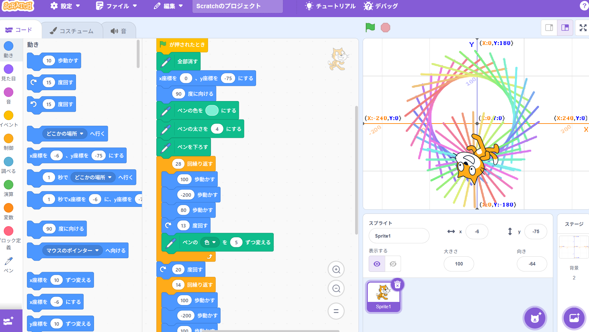
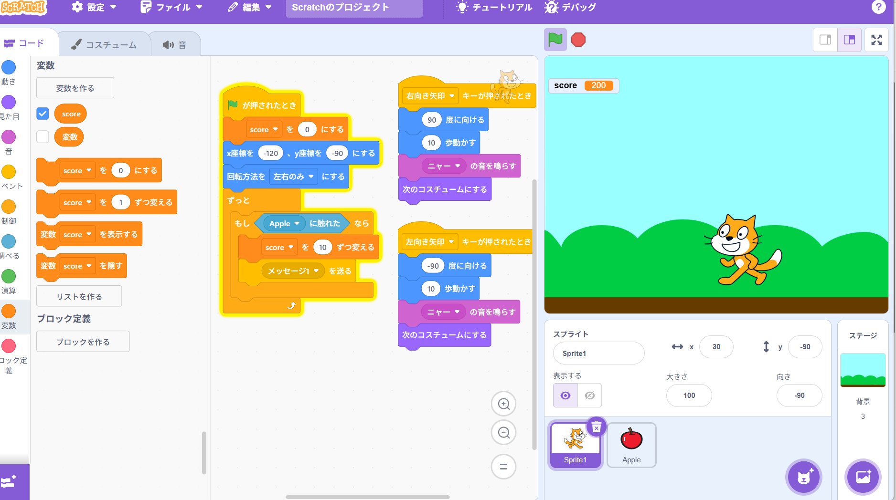

1週目のレポート ： 公大高専１年実習I-1
4b班37番 もも
第1週目
1-1 サイエンスアート

1.内容
Scratchでのコードの使い方を学び、円と花火のような色のついた図形を猫を動かして描いた。
色は番号で識別されていることが分かった。
2.感想
プログラミングをする際、計算を用いることで、猫の動きはより自然になった。
各々でプログラミングを付け足したとき、今の知識だけだと理想の動きを短時間で実現させるのは、かなり難しいと感じた。
1-2 ゲーム

1.内容
落ちてくるリンゴをキャッチしてスコアを獲得するゲームをScratchで作成した。
二つ以上のものを、同じ画面内で動かすための方法や、乱数の使い方を教わった。
2.感想
乱数を使い、リンゴが落ちてくる場所がランダムになったことで、一気にゲーム感が出た。
キャッチしたリンゴを画面内から消すことで、一連の動作が自然になった。
動作をただ行わせるのではなくて、その後どうなるかを考えてプログラミングすることが、大切だと感じた。
1-3 ホームページ作成
私のホームページ
1.内容
githubでホームぺージを作成した。アカウントの作成や、写真やファイルの添付の仕方、文章の編集方法を学んだ。
2.感想
全て英語だったため、操作に手間取った。
普段見ているwebサイトも、こんな風に編集して作られているのかなと思った。
各ページへのリンク
1週目のレポート
2週目のレポート
3週目のレポート
私のホームページ